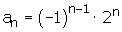
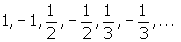

Sequences Problems
Interpret the Following Sequences and Describe Them.
1an = 1, 2, 3, 4, 5, ... n.
2an = -1, −2,−3, −4, −5, ... −n.
3an = 2, 3/2, 4/3, 5/4, ..., n+1/n.
4an= 2, −4, 8, −16, 32, ..., (−1)n−1 2n.
5
6
7
8
1
an = 1, 2, 3, 4, 5, ... n
It is increasing.
It is bounded below.
1 is the infimum.
It is not bounded above.
It is divergent.
2
an = −1, −2,−3, −4, −5, ... −n
It is decreasing.
It is bounded above.
−1 is the supremum.
It is not bounded below.
It is divergent.
3
an = 2, 3/2, 4/3, 5/4, ..., n+1/n
It is decreasing.
It is bounded above
2 is the supremum.
It is bounded below.
1 is the infimum.
It is convergent and the limit is 1.
4
an= 2, −4, 8, −16, 32, ..., (−1)n−1 2n
It is not monotonous
It is not bounded.
It is neither convergent nor divergent.
5

Monotone
3, 4/3, 1, 6/7,...
It is strictly monotonically decreasing.
Limit
a1= 3
a3= 1
a1 000= 0.5012506253127
a1 000 000 = 0.5000012500006
The limit is 0.5.
It is a convergent sequence.
Bounded
As the sequence is decreasing, 3 is an upper bound and the supremum.
0.5 is a lower bound and the infimum.
Thus, the sequence is bounded.
0.5 < a n ≤ 3.
6
2, − 4, 8, −16, ...
It is not monotonous.
It is neither convergent nor divergent.
It is not bounded.
7
It is not monotonous.
It is convergent, the limit is 0.
It is bounded above and 1 is the supremum.
It is bounded below and −1 is the infimum.
It is bounded.
−1 ≤a n ≤ 1.
8


Monotone
It is strictly monotonically increasing.
Limit
a1= 0.5.
a3= 0.6666 .
a1000= 0.999000999001.
a1000 000 = 0.999999000001.
The limit is 1.
It is a convergent sequence.
Bounded
It is bounded below and 1/2 is the infimum.
It is bounded above and 1 supremum.
The sequence is bounded.
0.5 ≤ a n < 1